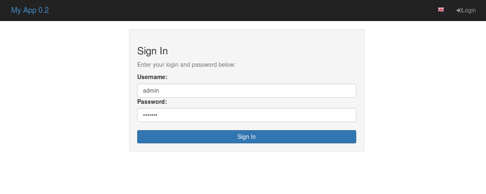
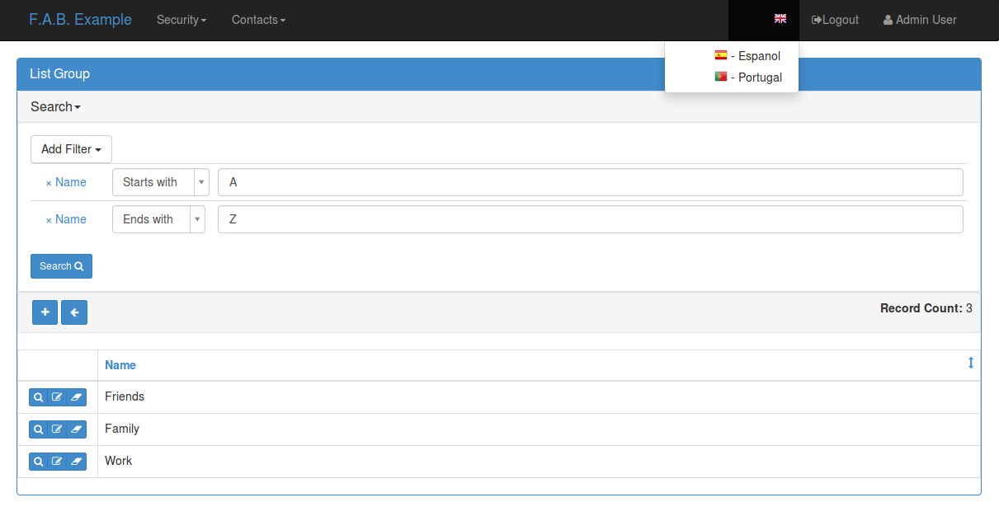
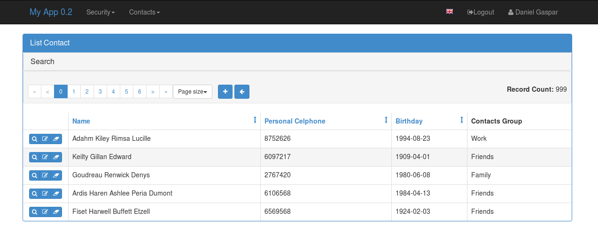

On this chapter we will create a very simple contacts application you can try a Live Demo (login with guest/welcome).
And the source code for this chapter on examples
If your working with the base skeleton application (take a look at the Installation chapter).
you now have the following directory structure:
<your project name>/
config.py : All the application's configuration
app/
__init__.py : Application's initialization
models.py : Declare your database models here
views.py : Implement your views here
It’s very easy and fast to create an application out of the box, with detailed security.
Please take a look at github examples
Let’s create a very simple contacts application. F.A.B uses the excellent SQLAlchemy ORM package, and it’s Flask extension. you should be familiar with it’s declarative syntax to define your database models on F.A.B.
Note
Since 1.3.0 there is partial support for MongoDB using MongoEngine. You can declare any normalized database schema, just like on SQLAlchemy, and use ModelView and CharView’s exactly the same way. Next releases will gradually support non normalized schemas for MongoDB.
On our example application we are going to define two tables, a Contact’s table that will hold the contacts detailed information, and a ContactGroup table to group our contacts or classify them. We could additionally define a Gender table, to serve the role of enumerated values for ‘Male’ and ‘Female’.
Although your not obliged to, i advise you to inherit your model classes from Model class. Model class is exactly the same has Flask-SQLALchemy db.Model but without the underlying connection. You can of course inherit from db.Model normal Flask-SQLAlchemy. The reason for this is that Model is on the same declarative space of F.A.B. and using it will allow you to define relations to User’s.
You can add automatic Audit triggered columns to your models, by inherit them from AuditMixin also. (see API Reference)
So, first we are going to create a ContactGroup model, to group our contacts
The ContactGroup model.
from sqlalchemy import Column, Integer, String, ForeignKey, Date
from sqlalchemy.orm import relationship
from flask.ext.appbuilder import Model
class ContactGroup(Model):
id = Column(Integer, primary_key=True)
name = Column(String(50), unique = True, nullable=False)
def __repr__(self):
return self.name
The Contacts table.
class Contact(Model):
id = Column(Integer, primary_key=True)
name = Column(String(150), unique = True, nullable=False)
address = Column(String(564), default='Street ')
birthday = Column(Date)
personal_phone = Column(String(20))
personal_celphone = Column(String(20))
contact_group_id = Column(Integer, ForeignKey('contact_group.id'))
contact_group = relationship("ContactGroup")
def __repr__(self):
return self.name
Notice that SqlAlchemy properties used here like ‘unique’, ‘nullable’ and ‘default’, will have special treatment. In this case when adding a new Contact a query will be made to validate if someone with the same name already exists. Empty name contacts will not be allowed. Column types are validated. The address field will contain ‘Street’ has default on add form. You can add your own custom validations also, take a look at Advanced Configuration
Now we are going to define our view for ContactGroup model. This view will setup functionality for create, remove, update and show primitives for your model’s definition.
Inherit from ModelView class that inherits from BaseCRUDView that inherits from BaseModelView, so you can override all their public properties to configure many details for your CRUD primitives. take a look at Advanced Configuration.
from flask.ext.appbuilder import ModelView
from flask.ext.appbuilder.models.sqla.interface import SQLAInterface
class GroupModelView(ModelView):
datamodel = SQLAInterface(ContactGroup)
related_views = [ContactModelView]
I hope this was easy enough! Some questions may arise...
Must have properties:
| datamodel: | is the db abstraction layer. Initialize it with your view’s model. |
|---|
Optional properties:
| related_views: | if you want a master/detail view on the show and edit. F.A.B. will relate 1/N relations automatically, it will display a show or edit view with tab (or accordion) with a list related record. You can relate charts also. |
|---|
This is the most basic configuration (with an added related view).
But where is ContactModelView ? (that was a reference in related_views list)
Let’s define it:
class ContactModelView(ModelView):
datamodel = SQLAInterface(Contact)
label_columns = {'contact_group':'Contacts Group'}
list_columns = ['name','personal_celphone','birthday','contact_group']
show_fieldsets = [
('Summary',{'fields':['name','address','contact_group']}),
('Personal Info',{'fields':['birthday','personal_phone','personal_celphone'],'expanded':False}),
]
Some explanation:
| label_columns: | defines the labels for your columns. The framework will define the missing ones for you, with a pretty version of your column names. |
|---|---|
| show_fieldsets: | A fieldset (Django style). You can use show_fieldsets, add_fieldsets, edit_fieldsets customize the show, add and edit views independently. |
Additionally you can customize what columns are displayed and their order on lists and forms. Remember you can include columns, relations or methods from a model’s definition. If you have a long list of columns and want to exclude just a few from add/edit/show form you can use the exclude columns property:
flask.ext.appbuilder.baseviews.BaseCRUDView(**kwargs)[source]¶The base class for ModelView, all properties are inherited Customize ModelView overriding this properties
add_columns = None¶A list of columns (or model’s methods) to be displayed on the add form view. Use it to control the order of the display
add_exclude_columns = None¶A list of columns to exclude from the add form. By default all columns are included.
edit_columns = None¶A list of columns (or model’s methods) to be displayed on the edit form view. Use it to control the order of the display
edit_exclude_columns = None¶A list of columns to exclude from the edit form. By default all columns are included.
list_columns = None¶A list of columns (or model’s methods) to be displayed on the list view. Use it to control the order of the display
show_columns = None¶A list of columns (or model’s methods) to be displayed on the show view. Use it to control the order of the display
show_exclude_columns = None¶A list of columns to exclude from the show view. By default all columns are included.
You can also control which columns will be included on search, use the same logic for this:
flask.ext.appbuilder.baseviews.BaseModelView(**kwargs)[source]¶The base class of ModelView and ChartView, all properties are inherited Customize ModelView and ChartView overriding this properties
This class supports all the basics for query
search_columns = None¶List with allowed search columns, if not provided all possible search columns will be used If you want to limit the search (filter) columns possibilities, define it with a list of column names from your model:
class MyView(ModelView):
datamodel = SQLAInterface(MyTable)
search_columns = ['name','address']
search_exclude_columns = None¶List with columns to exclude from search. Search includes all possible columns by default
You can easily use builtin alternative look, using widgets take a look at the widgets example.
Note
Fields that reference relationships, will display the defined related model representation (on this case __repr__() methods on ContactGroup Model), so by default these fields can’t be ordered. To enable order by on a list for relationship fields, you can (since 1.1.1) reference them using dotted notation. On this example you can reference them using ‘contact_group.name’.
Register everything, to present the models and create the menu. Issue create_all to create your models also.
db.create_all()
appbuilder.add_view(GroupModelView, "List Groups",icon = "fa-folder-open-o",category = "Contacts",
category_icon = "fa-envelope")
appbuilder.add_view(ContactModelView, "List Contacts",icon = "fa-envelope",category = "Contacts")
Take a look at the API Reference for add_view method.
You can find this example at: https://github.com/dpgaspar/Flask-AppBuilder/tree/master/examples/quickhowto
Live quickhowto Demo (login with guest/welcome).
Note
The icons for the menu on this example are from font-awesome, Checkout fontAwesome Icons names. Font-Awesome is already included and you can use any icon you like on menus and actions
With this very few lines of code (and could be fewer), you now have a web application with detailed security for each CRUD primitives and Menu options, authentication, and form field validation. Yet you can extensively change many details, add your own triggers before or after CRUD primitives, develop your own web views and integrate them.
Some images:
  Your ModelView classes expose the following methods has flask endpoints
This exposes a REST API (not completely strict). You also have an AJAX REST API. Each method as it’s own security permission, so you can control accesses at this level.
The API methods take the same arguments as list, show, add, edit and delete, but return JSON and HTTP return codes is case of success or errors, take a close look at the following table for a description of each method.
| URL | Description | Permission Name | HTTP |
|---|---|---|---|
| /api | Return the existing API URL’s | can_list | GET |
| /api/read | Queries models data, receives args as list | can_list | GET |
| /api/column | Returns results for related column | can_list | GET |
| /api/create | Receives a form as POST and creates record | can_add | POST |
| /api/update | Receives a form as PUT and updates record | can_edit | PUT |
| /api/delete | Deletes record | can_delete | DELETE |
This API is still BETA and will be subject to change. In the future F.A.B. will probably use AngularJS to display the UI interface using AJAX.
The root of the API returns information about the available methods, like their URL’s using url_for from Flask. The users permissions on this view, labels etc...
Let’s take a close look at the returned JSON structure from this method. The returned object is a dictionary containing the following keys:
| api_urls: | Dictionary with All builtin CRUD methods and their URL’s |
|---|---|
| can_add: | User’s permission on this view. Returns true or false. |
| can_delete: | User’s permission on this view. Returns true or false. |
| can_edit: | User’s permission on this view. Returns true or false. |
| can_show: | User’s permission on this view. Returns true or false. |
| can_update: | User’s permission on this view. Returns true or false. |
| label_columns: | Dictionary for label_columns exactly equal as the ModelView property |
| list_columns: | The columns to use when listing. |
| modelview_name: | The name of the ModelView class. |
| modelview_urls: | Dictionary with the UI’s URLS for Add, Edit and Show. |
| order_columns: | List with the columns allowed to do order by commands. |
| page_size: | The default page size. |
| search_fields: | Dictionary with column names as keys, and WTForm html fields as values. |
| search_filters: | Dictionary with column names as keys and a List with allowed operations for filters as values. |
This is the read method of the API, will query your model with filter, ordering and paging operations.
Let’s take a close look at the returned JSON structure from this method. The returned object is a dictionary containing the following keys:
| count: | Returns an Int with the total number of records. |
|---|---|
| label_columns: | Dictionary for label_columns exactly equal as the ModelView property |
| list_columns: | The columns to use when listing. |
| modelview_name: | The name of the ModelView class. |
| order_columns: | List with the columns allowed to do order by commands. |
| page: | Returns an Int, with the page on some page size where the result is located. |
| page_size: | Returns an Int with the current page size. |
| pks: | Returns a List with the results private keys. |
| result: | Returns a List with a dictionary for each record. |
This method accepts as parameters the following:
| Set page size: | _psize_<YOUR MODEL VIEW>=<PAGE SIZE> |
|---|---|
| Set page: | _page_<YOUR MODEL VIEW>=<PAGE> |
| Order by column: | |
| _oc_<<YOUR MODEL VIEW>=<COLUMN NAME> | |
| Order by direction: | |
| _od_<<YOUR MODEL VIEW>=<asc|desc> | |
| Filters: | _flt_<INDEX of the search operations for this column>_<COLUMN NANE>=<VALUE> example: _flt_0_name=A |
Deletes a record from the model only accepts HTTP DELETE operations. if you want to delete a record with 8 as primary key issue an HTTP DELETE to the following URL: htpp://localhost:8080/contactmodelview/delete/8
It will return a dictionary that on case of success will have the folowing keys (returns HTTP 200):
{ “message”: “Deleted Row”, “severity”: “success” }
In case of error (returns HTTP 500):
{ “message”: “General Error <class ‘sqlalchemy.orm.exc.UnmappedInstanceError’>”, “severity”: “danger” }
F.A.B. as some extra views like ModelView but with different behaviours. You can radically change the way a ModelView looks like using various approaches like changing CRUD templates or widgets, CSS, inserting or injecting your own HTML etc, take a look at Templates, Advanced Configuration, Customizing.
Yet the framework brings 3 extra subclasses from BaseCRUDView (ModelView is a subclass of BaseCRUDView, this means that it implements complete CRUD based on models as well as JSON exposure). This views implement alternative CRUD GUI.
For rendering multiple views (subclasses of BaseModelView) on the same page use MultipleView. Using our previous example you could render the Group list and Contact list on the same page, to do it add the following view after the definition of GroupModelView and ContactModelView:
First remember to import:
from flask.ext.appbuilder import MultipleView
Then define your View:
class MultipleViewsExp(MultipleView):
views = [GroupModelView, ContactModelView]
Then register the view with a menu:
appbuilder.add_view(MultipleViewsExp, "Multiple Views", icon="fa-envelope", category="Contacts")
You can render as many views on the same page as you want, this includes Chart type views also, take a look at Chart Views to learn about Chart views.
Another interesting alternative view is the MasterDetailView as the name implies it implements a master detail GUI, it will render a menu version of a chosen model and then relate with a previous defined BaseModelView subclass of you choice. Again using the Contact application example:
class GroupMasterView(MasterDetailView):
datamodel = SQLAInterface(ContactGroup)
related_views = [ContactModelView]
The datamodel is the master and the related_views property are the views to be filtered by the user’s selection of the group. You can define as many detail views as you like and again you can even include Chart type views (they are subclasses of BaseModelView), remember there must be a model relation between the master and the details, and again the framework will figure out how to relate them by inspecting the backend defined relationships.
{kind=link}
{kind=link}
{kind=link}